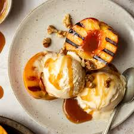

Grilled Peaches & Cream

This is an easy grilled peach dessert! I use a honey nut flavored cream cheese spread and it's wonderful! Drizzle a little extra honey after they're grilled and they're perfect!
Ingredients
- 4 peaches, halved and pitted
- 2 tablespoons clover honey
- 1 cup soft cream cheese with honey and nuts
- 1 tablespoon vegetable oil
Steps
- Preheat a grill for medium-high heat.
- Brush peaches with a light coating of oil. Place pit side down onto the grill.
- Grill for 5 minutes, or until the surfaces have nice grill marks.
- Turn the peaches over, and drizzle with a bit of honey.
- Place a dollop of the cream cheese spread in the place where the pit was.
- Grill for 2 to 3 more minutes, or until the filling is warm.
- Serve immediately.